先日の記事「宮川町の京都市広報板の町名表示を見てみよう」で京都市広報板を観察しはじめてからというもの、町中を巡っているうちに他にも面白い事例を見つけたので、町名表示を中心に小ネタ集としてまとめてみることにしました。
さらに観察を続けていたら、何が珍しくて何が思ったよりありふれているのかがわかってきたので、改稿しました。（2026-06-13）
ふつうの広報板
まず、標準的な町名表示を見ていきましょう。京都市広報板は、その町名表示の種類によって大きく
- 通り名の記述のあるもの
- 通り名の記述のないもの
- そもそも町名表示がないもの
の3種類に分けられます。町名表示板については広報板の設置規則の別紙で「町名表示板を取り付ける場合は，設置場所の住所を記載するものとする」とされており、その設置は任意であるとともに、住所の表示方法も規定されていません。
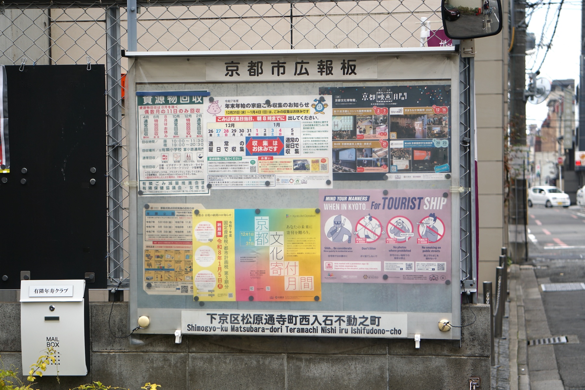
下京区松原通寺町西入石不動之町
Shimogyo-ku Matsubara-dori Teramachi Nishi iru Ishifudono-cho
通り名の組み合わせでの記述を含む例です。通り名①＋通り名②＋「上る／下る／東入／西入」＋町名というのが最も基本的ですが、複雑になってくると「東山区大黒町通松原下る二丁目山城町」「東山区三条通神宮道上ル東入定法寺町」「左京区夷川通川端東入5筋目上る秋築町」のようになってきます。また、通り名は他の要素で代用されることもあります：「東山区三条通白川橋東入四丁目中之町」「東山区下河原通八坂鳥居前下る南町」。
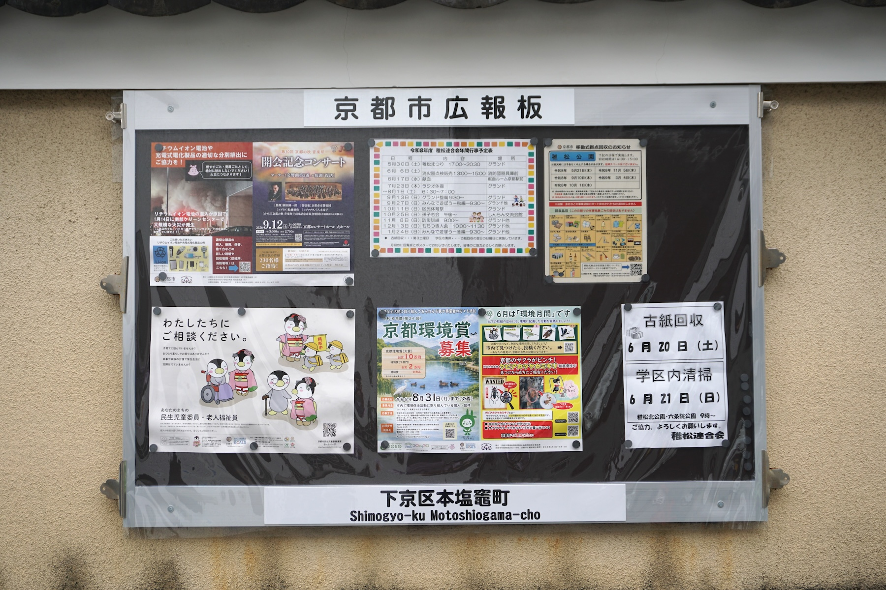
下京区本塩竈町
Shimogyo-ku Motoshiogama-cho
通り名の組み合わせの記述がない例です。この広報板は、通り名を使った「下京区富小路通五条下る本塩竈町」の広報板（100mほど南にある）と併存しています。また、周縁部や山間部では「西京区松室地家町」「北区杉阪道風町」のように、これが普通です。
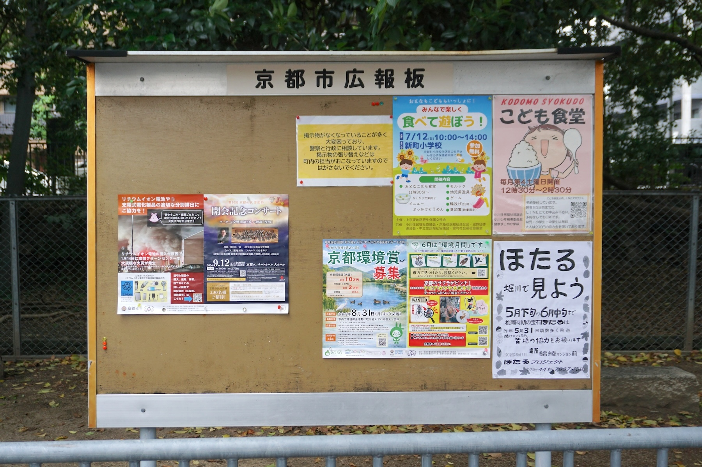
町名表示板がない例です。この広報板は（東堀川通一条上る）上京区竪富田町にありますが、その旨の表示はありません。そもそも枠の下辺が細く、町名表示板を設置するスペースがないものもあります（伏見区桃山町丹下のものなど）。なお、そこに無理やり町名表示板を設置しているものもあります（伏見区深草稲荷中之町のものなど）。
町名以外を使っている
ほとんどの広報板の町名表示は区名・（通り名・）町名の組み合わせだけでできていますが、一部の広報板では、町名以外の方法を併用して場所を表していることがあります。
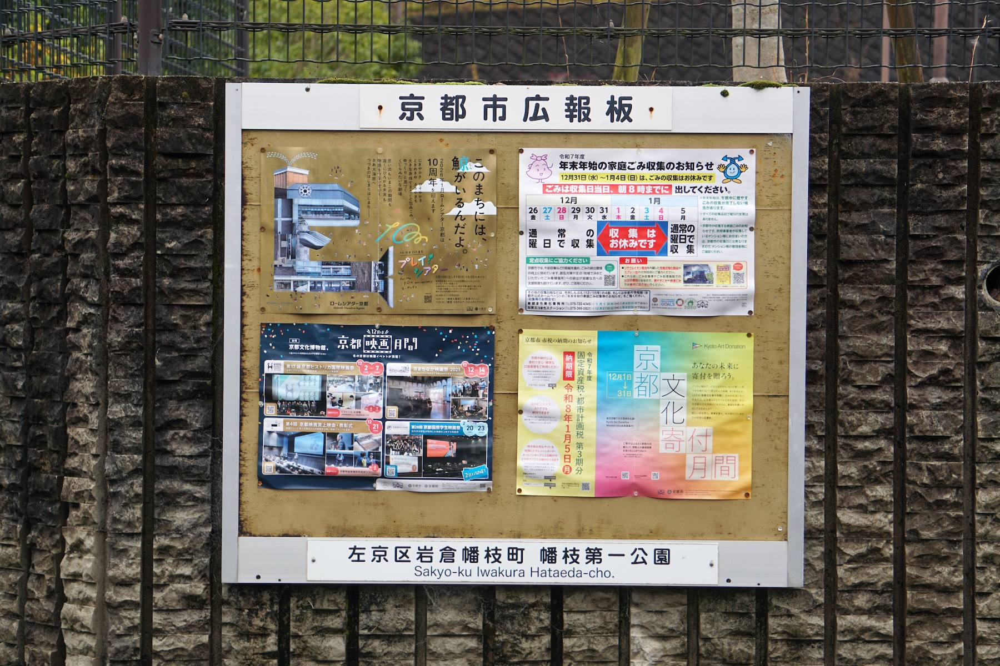
左京区岩倉幡枝町 幡枝第一公園
Sakyo-ku Iwakura Hataeda-cho.
岩倉幡枝町には複数の広報板がありますが、その多くが「左京区岩倉幡枝町」とだけ書いているのに対し、（知る限り）これだけは所在地の公園の名前を続けて書いています。
類例：- 東山区本町十五丁目東福寺北門前
- 東山区本町十五丁目月輪坦町
- 左京区吉田本町（ちびっこ広場）
- 下京区下之町楓のまち
町名が二つある
京都市広報板は、一つの町に一つあったり複数あったり、時に一つもないこともあります。そのほかに、複数の町に一つの広報板がある場合もある、というのが次の例です。
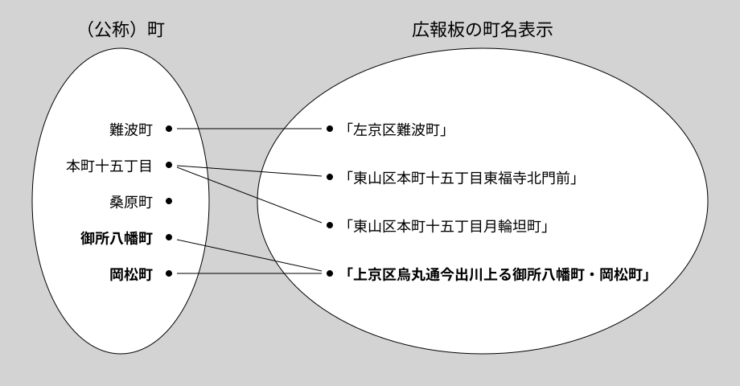
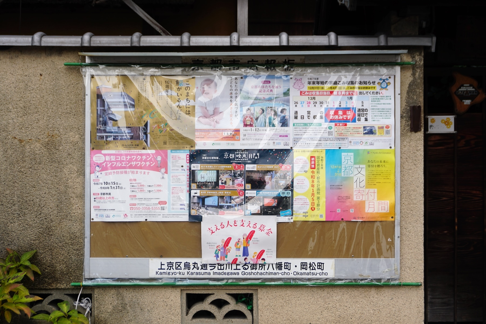
上京区烏丸通今出川上る御所八幡町・岡松町
Kamigyo-ku Karasuma Imadegawa Goshohachiman-cho • Okamatsu-cho
広報板自体は御所八幡町の町域にありますが、町名表示板には南隣の岡松町の名前も載っています。
類例：- 東山区大和大路通四条下る二丁目西入井出町・六軒町
- 中京区新町通三条上る町頭町・神明町
通称町名
一部の町では、行政上使われる公称町名とは異なる「通称町名」が使われていることがあります。
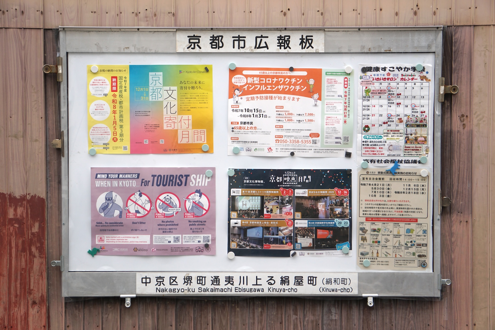
中京区堺町通夷川上る絹屋町（絹和町）
Nakagyo-ku Sakaimachi Ebisugawa Kinuya-cho (Kinuwa-cho)
この町は、公には「絹屋町」と呼ばれますが、そのほかに「絹和町」という別名もあるということでしょうか。NDLDCでそれぞれ検索に掛けてみると、「絹屋町」は明治9年まで遡れる一方、「絹和町」は昭和26年以降の例しかありません。前者が本来で、戦中か戦後頃になって後者の呼び方が現れてきたということのように見えますね。これは通称地名が括弧の中に収まっていますが、類例として載せた「太秦蚕ノ宮町（上刑部町）」ではむしろ公称町名の方が括弧内に置かれています。
類例：- 右京区太秦蚕ノ宮町（上刑部町） ［更新済。GSV］
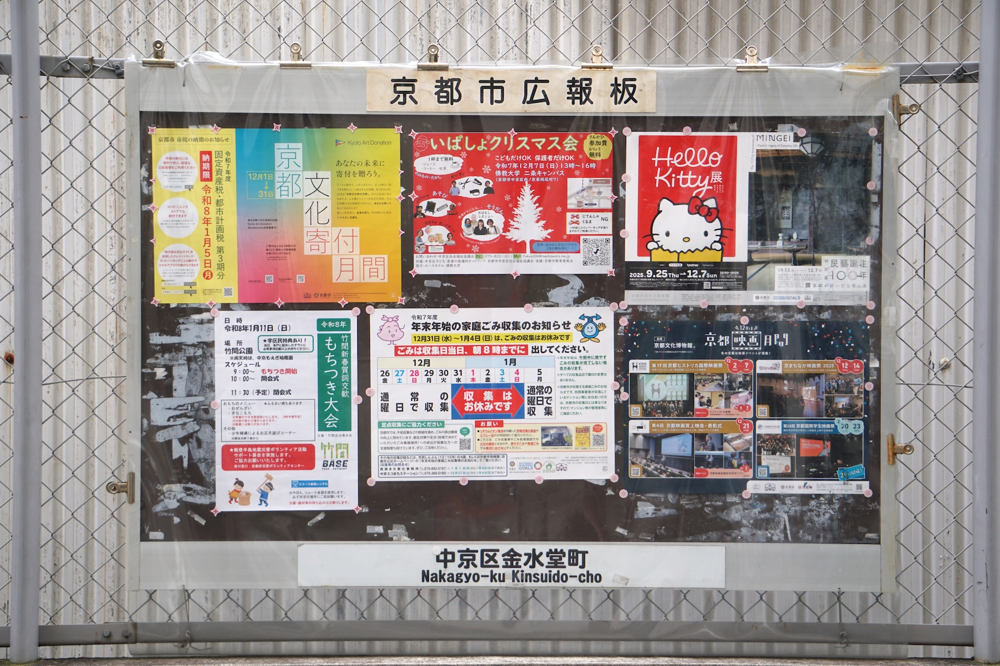
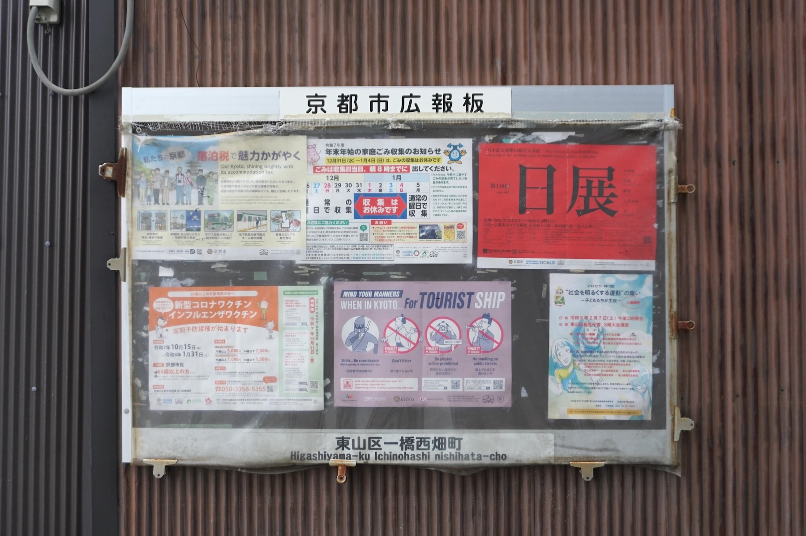
東山区一橋西畑町
Higashiyama-ku Ichinohashi nishihata-cho
これも通称町名だけを載せた例ですが、「一橋」を冠する公称町名は一橋宮ノ内町と一橋野本町の2つしかありません。松井福󠄁次郎・河合喜重『一橋學區大觀』（日本今熊野新聞社󠄁、昭和7）には次のような記述があり、「一橋西畑町」も町内会の枠組として存続しているのかもしれませんが、その領域はよく分かりません。
公同組合では便宜本町六丁目、同七丁目、[…]、東林町東組、東林町西組、東林町南組、東林町北組、[…]、野本町、宮ノ內町、西畑町、[…]等に區分し、各町に組長、委員を置き業績をあげてゐる。
（太字は筆者）
公称町を細分した町内会の単位で広報板の町名表示が書かれることはままあります。「左京区下鴨宮崎町東部」「中京区壬生森町（八部）」「北区小山下総町（西部下町）」などがそれに当たります。ただ、その領域の命名には公称町に補足する形と、「上京区土屋町通丸太町下る中主税町」のように新たに命名する形があります。類例としては、後者のみを載せました。
類例：- 上京区相国寺北門前上ノ町
- 上京区烏丸通寺之内上る東入相国寺北門前仲之町
「丁目」
京都市の町名は、「虎石町」「紫野雲林院町」のように「〜町」で終わるものがほとんどで、「南新地」「厨子奥長通」のように「町」が付かない町名もあります。これらに加えて、「六丁目」「九町目」や「天使突抜三丁目」「橋西二町目」のように、通りに沿って「〜丁目（町目）」という命名がされているものもあります。このような町の広報板では「丁目」まで含めて住所を表示するのが通常ですが、例外もありました。
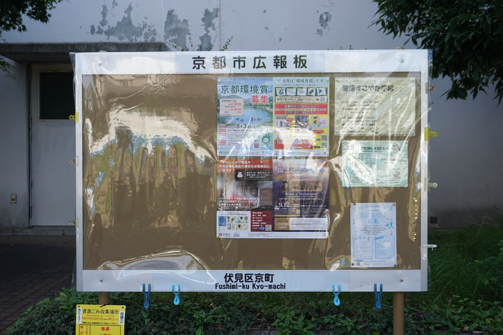
伏見区京町
Fushimi-ku Kyo-machi / Fushimi-ku kyo-machi
伏見区の京町は、京町通に沿って広がり、南から北まで一丁目〜十丁目に分かれています。町域内にある広報板は、その多くが「伏見区京町九丁目」のように「丁目」まで含めて書いています。しかし、六丁目と南七丁目にあるこの広報板は「伏見区京町」としか書いていません（写真は京町南七丁目のもの）。西隣の両替町も一丁目から十五丁目までに分かれていますが、一丁目と二丁目に「伏見区両替町」があります。
ローマ字表記が二通りある
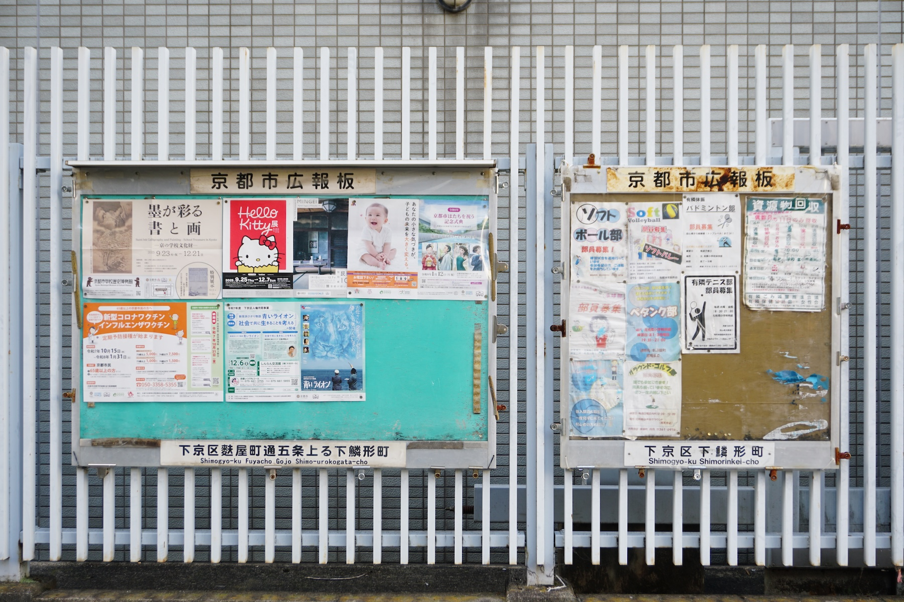
下京区麩屋町通五条上る下鱗形町
Shimogyo-ku Fuyacho Gojo Shimo-urokogata-cho
下京区下鱗形町
Shimogyo-ku Shimorinkei-cho
2枚並んだ広報板はどちらも「下鱗形町」のものですが、「麩屋町通五条上る」の有無と、なにより町名のローマ字表記が異なります。左は「Shimo-urokogata-cho」、右は「Shimorinkei-cho」となっていますが、『角川日本地名大辞典』『日本歴史地名大系』や、手軽な手段として日本郵便も「シモウロコガタチョウ」としています。また、「下京区麩屋町通万寿寺上る上鱗形町」の広報板でも「Shimogyo-ku Fuyacho Manjuji Kamiurokogata-cho」となっています。左の方を設置するときに表記を改めたんでしょうか。
ローマ字表記がない
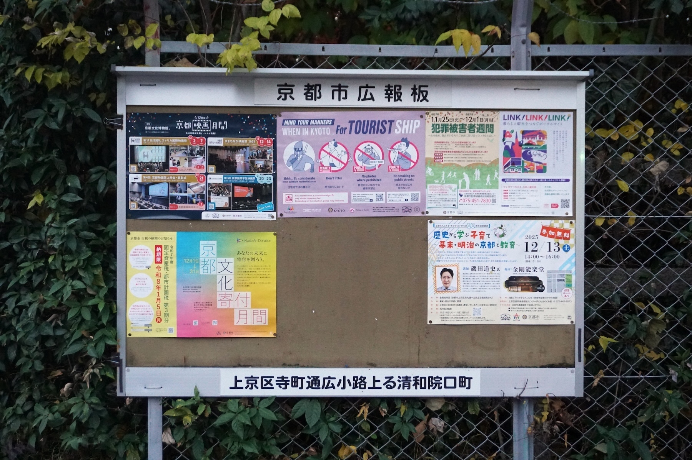
上京区寺町通広小路上る清和院口町
そういうこともあるみたいです。古い時期のものだから、というわけでもなさそうですが……
ところで、「清和院口町」というのは通称町名であるようです。所在地は公称町名で言うと「染殿町」にあたります。通り名相当の表現として「清和院口」というのが町名表示に使われることはあるので（京都府立医科大学の例）、清和院御門に面する町として、染殿町（やその周辺の町？）の別名として「清和院口町」というのが非公式に使われているということでしょうか。
- 上京区寺之内通堀川西入東西町
- 上京区西洞院通一条上る大峰図子町
地番を書いている
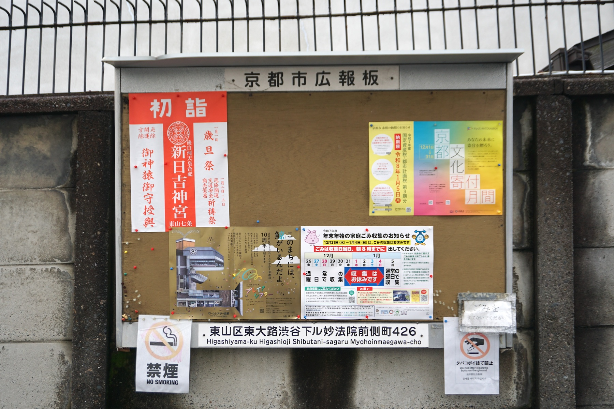
東山区東大路渋谷下ル妙法院前側町426
Higashiyama-ku Higashioji Shibutani-sagaru Myohoinmaegawa-cho
確かに設置場所の住所ではありますが、そこまで細かい情報を求めているわけではないと思うんですよね。
類例：- 東山区本町15丁目778
- 左京区一乗寺南大丸町29
- 北区小山上内河原町8向かい
不完全な記述
ここまで見てきた例は、珍しいにしても住所表示としては妥当なものでした。しかし、京都市広報板の住所表示には、住所を表示するという役目を果たしきれていないものもたまにあります。通り名の記述があるのに、通り①・通り②・方向・町名の4点セットになっていないものを見てみましょう。
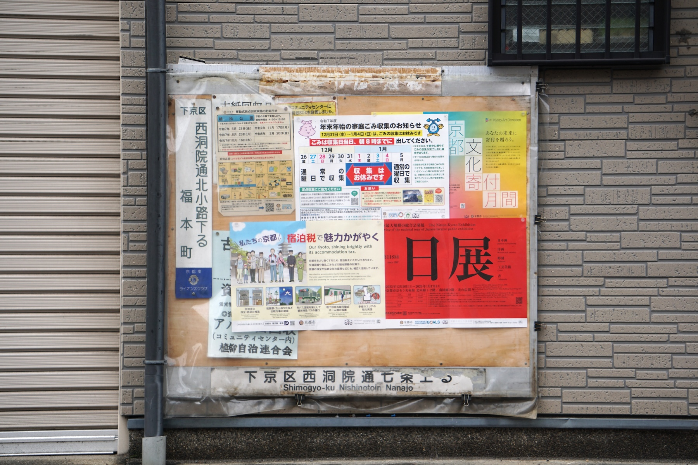
下京区西洞院通七条上る
Shimogyo-ku Nishinotoin Nanajo
西洞院通の七条を上がった……どこですか？ 答えはライオンズクラブの町名表示板に「福本町」と書いてありますが、わざわざ別の町名表示板を据え付けてあるあたり、さすがに通り名だけあって町名がないというのは受け入れられなかったんでしょうか。あと、ローマ字表記はナナジョウなんですね。
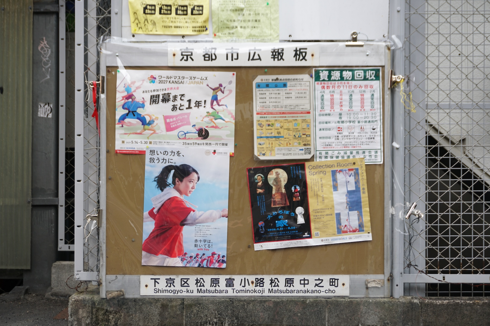
下京区松原富小路松原中之町
Shimogyo-ku Matsubara Tominokoji Matsubaranakano-cho
今度は町名はあるものの、上りも下りも、東にも西にも入っていません。
類例：- 東山区花見小路三条教業町
- 上京区松屋町通丸太町左馬松町（更新済。参考）
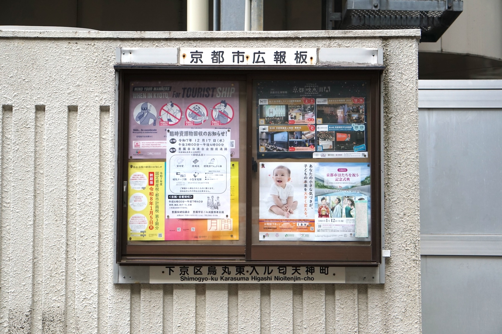
下京区烏丸東入ル匂天神町
Shimogyo-ku Karasuma Higashi Nioitenjin-cho
烏丸通からどこかの通りに東へ入ればいいらしいとはなりますが、なぜかその通りの名前が欠けています。
この広報板は「京都仁丹樂會」の2013年5月の記事で紹介されています。12年経っても修正されていない様子ですね。京都仁丹樂會は、仁丹の町名表示板についての調査を行っている団体で、この表示を「あまりに乱暴」としつつ、対して「近くの仁丹は次のように正確な表現で、正確な場所に設置されてい」るとしています。ではその仁丹がどこにあるかというと……
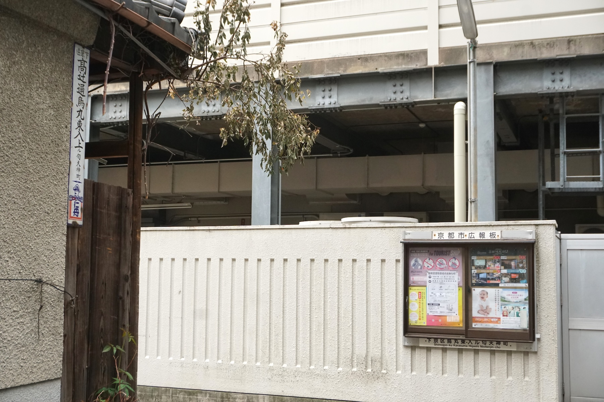
道の向かい、広報板からはせいぜい5m程度のところにあります（写真左）。仁丹には「下京区髙辻通烏丸東入上ル匂天神町」とあり、確かに正確な表現です。もしかしたら、広報板の町名表示は、「下京区髙辻通烏丸東入上ル匂天神町」ってことなのかもしれません。すごい脱字もあるものです（いいえ）。
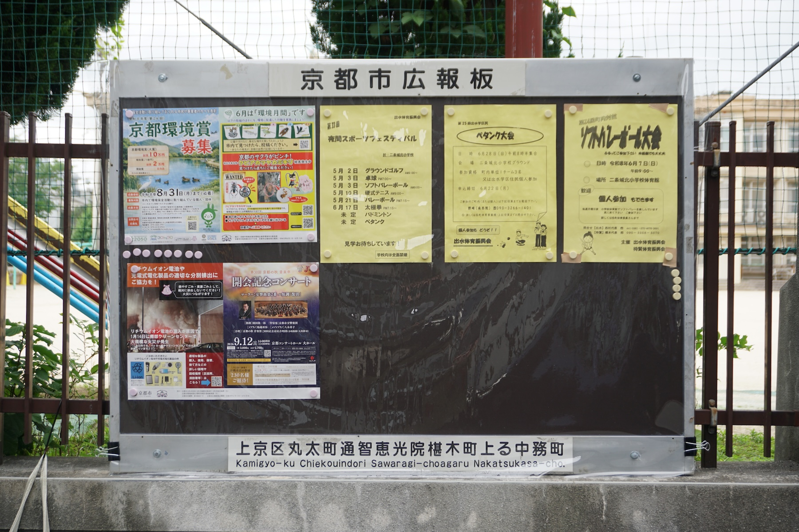
上京区丸太町通智恵光院椹木町上る中務町
Kamigyo-ku Chiekouindori Sawaragi-choagaru Nakatsukasa-cho.
通りの名前が多すぎる例もありました。この広報板自体は、地図の赤点●（小学校東側）にあります。しかし、地図に示した通り「丸太町通智恵光院椹木町」は東西・南北・東西の通りが組み合わせられており、ありえない記述になっています。ローマ字表記では「智恵光院通椹木町上る（Chiekouindori Sawaragi-choagaru）」になっており、成立する記述でこそありますが、指す場所は地図の青いエリア■です。中務町はおよそ点線で囲った範囲であり、智恵光院通沿いの青いエリアはその隣、西院町に属します。正しく書きかえるなら、「椹木町通智恵光院西入二筋目上る中務町」とかでしょうか（地図の緑色の矢印⬅）。
また、白抜きの赤点○で示した位置（小学校北側）には「上京区智恵光院通下立売下る中務町」という広報板があります。これもやはり「智恵光院通下立売下る」は青いエリアのあたりなので、不思議な記述です。
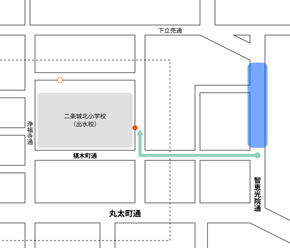
通り名関連①「通」
通り名による記述をする場合、基本的には面する通りを先に書いて「〜通」とし、その後に交差する通りを「通」を付けずに書きます。しかし、京都市広報板にはこの規則に従わないものがあります。
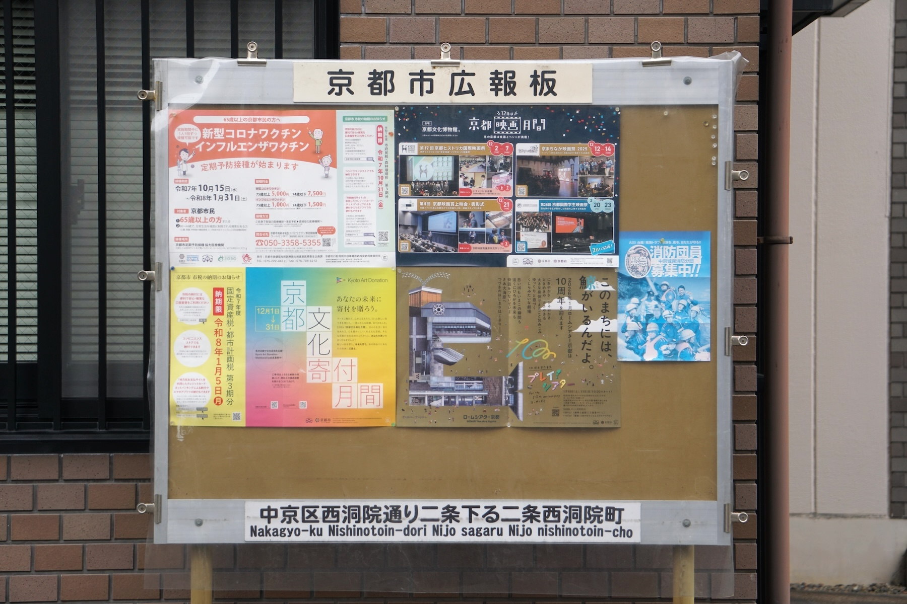
中京区西洞院通り二条下る二条西洞院町
Nakagyo-ku Nishinotoin-dori Nijo sagaru Nijo nishinotoin-cho
まずは、「り」の送り仮名があるものです。通りの名前は、道路標識や案内看板でこそ「〜通り」という表記が見られますが、住所表示では「〜通」という風に「り」を送らないのが普通です。
道路標識の話をすると、例外の例外として烏丸通の姉小路通〜錦小路通には「〜通」で書かれた標識があります（GSV、参考）。堀川通の元誓願寺通〜椹木町通では、「り」を後から書き加えたかのような標識を見ることができます（GSV）。また、四条大和大路には「大和大路通リ（縄手通り）」（GSV）と片仮名が使われているものがあるなど、道路標識も面白い観察対象になり得そうです。
- 上京区猪熊通り上立売下る藤木町
- 中京区木屋町通り三条上る上大阪町
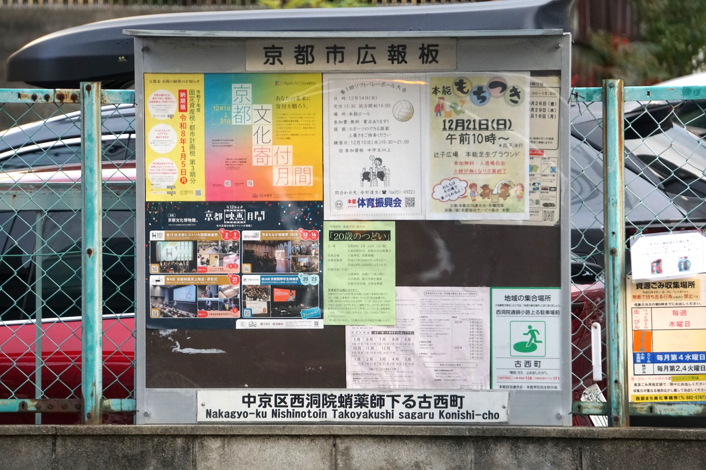
中京区西洞院蛸薬師下る古西町
Nakagyo-ku Nishinotoin Takoyakushi sagaru Konishi-cho
一方、「通」が付かない例もあります。
類例：- 東山区花見小路三条教業町
- 下京区御幸町松原下ル須浜町
- 下京区東中筋揚梅下ル天使突抜三丁目
- 上京区寺之内室町西入納屋町
- 上京区寺之内新町西入妙顕寺前町
- 東山区大和大路四条下る小松町
- 下京区富小路五条下ル本塩竈町 ［未調査］
- 東山区大和大路松原西入弓矢町
- 下京区西木屋町七条上る新日吉町
通り名関連②「上」「下」「入」
「○○通××」のあと、交差点からどの方向に進むかが「上る／上ル」「下る／下ル」「東入」「西入」で表されます。このうち、「上る／上ル」「下る／下ル」は平仮名か片仮名かにかなりの揺れが見られますが、「東入」「西入」はこの通りに書かれるのが通常です。
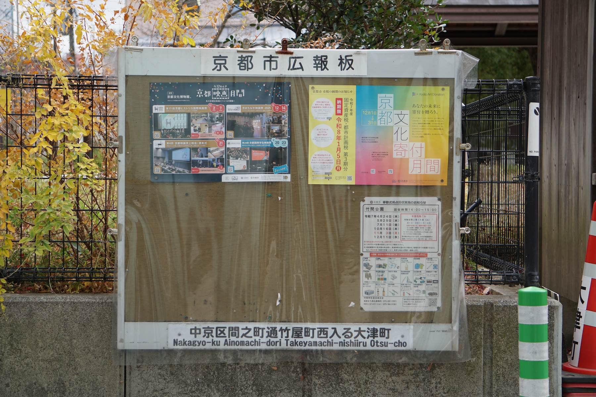
中京区間之町通竹屋町西入る大津町
Nakagyo-ku Ainomachi-dori Takeyamachi-nishiiru Otsu-cho
つまり、その限りでないこともあるということで、「東入る」「西入る」というように送り仮名があるものも見つかります。
類例：- 下京区万寿寺通柳馬場東入る堅田町
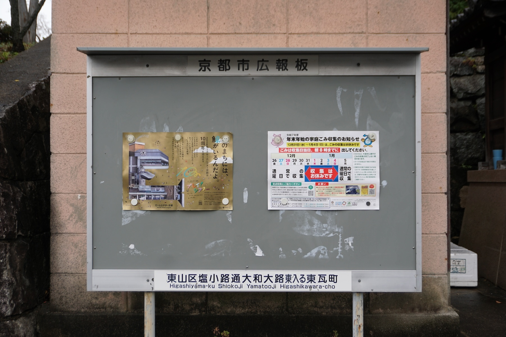
東山区塩小路通大和大路東入る東瓦町
Higashiyama-ku Shiokoji Yamatooji Higashikawara-cho
これも「東入る」ですが、二文字分の幅に三文字を押し込めて「東入る」と書いており、わざわざ送り仮名を付けた理由が気になります。
ところで、この通り名の記述は奇妙に感じます。東瓦町は東大路通の東側にある町で、広報板も東大路通沿いにあります。単に「東大路通塩小路上る」のようにすればいいところを、「塩小路通大和大路東入」というのは随分遠くから攻めています。似た例として「東山区古門前通大和大路東入四丁目石橋町」というのがあり、これも東大路沿いの町をはるばる大和大路から辿ってきています。東大路通が比較的新しい道路だからかなあなどと思えば、すぐ北には「東山区渋谷通東大路東入常盤町」があって、普通に「東大路」を使っているのでよくわかりません。
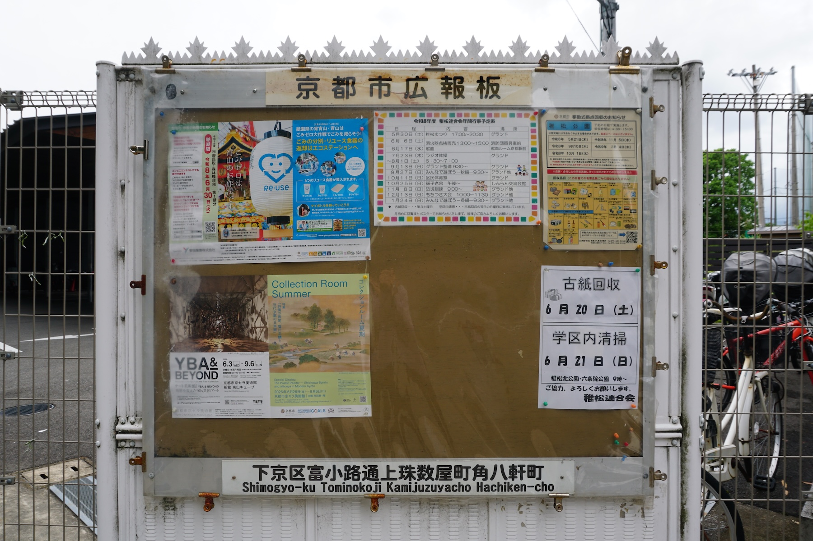
下京区富小路通上珠数屋町角八軒町
Shimogyo-ku Tominokoji Kamijuzuyacho Hachiken-cho
稀な例として、「上る・下る」「入る」を使わず、代わりに「角」を使って場所を指し示すものもあります。実際この広報板は交差点に設置されていて、上るとも西入とも言いにくい位置にあります（GSV）。
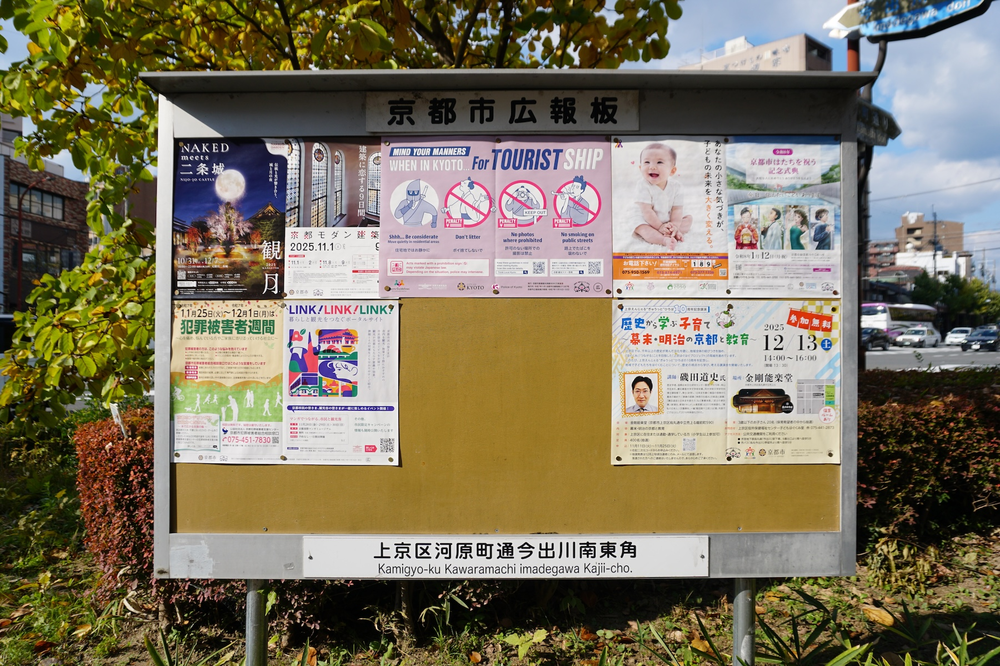
上京区河原町通今出川南東角
Kamigyo-ku Kawaramachi imadegawa Kajii-cho.
これも同様に「南東角」と書いています。ただし、さらに珍しいこととして町名がありません。一方でローマ字表記には「Kajii-cho」とあります。単純に場所を伝えるためであればこの書き方でも十分ですが、「町名表示板」としては町名部分が脱落してしまった不完全な記述と見るのが良いでしょう。
おまけ：広報板さまざま
京都市広報板の設置要項では、広報板の仕様として「A板」「B板」「C板」の3種類が定められています。多くの広報板はこれらに従っていますが、定形外のものもよく見かけます。特に目に留まったものを並べてみました。
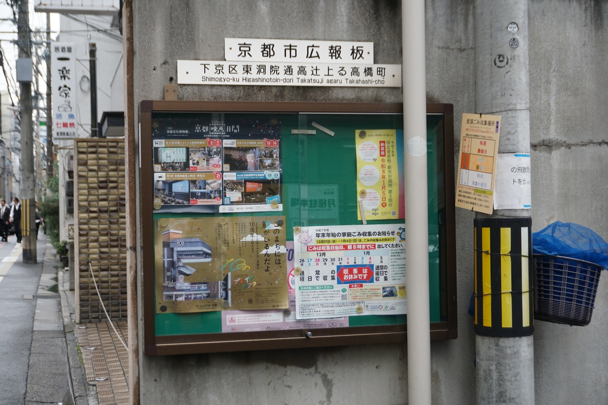
下京区東洞院通高辻上る高橋町
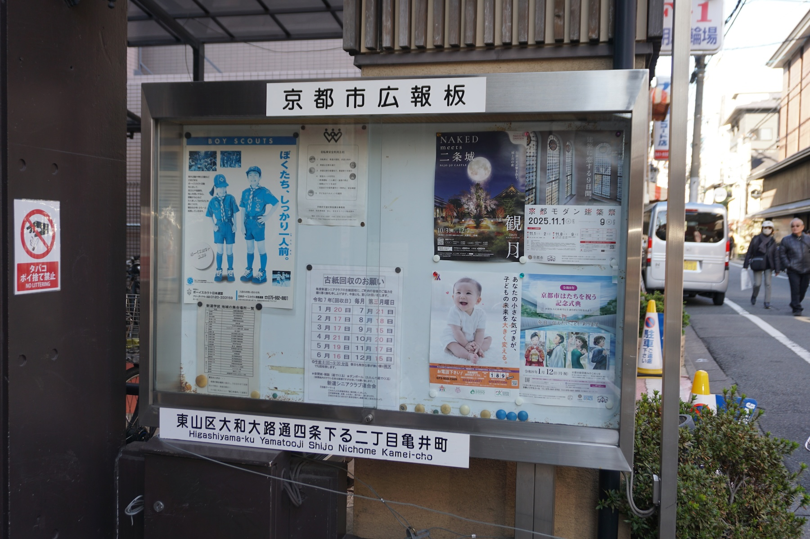
東山区大和大路通四条下る二丁目亀井町
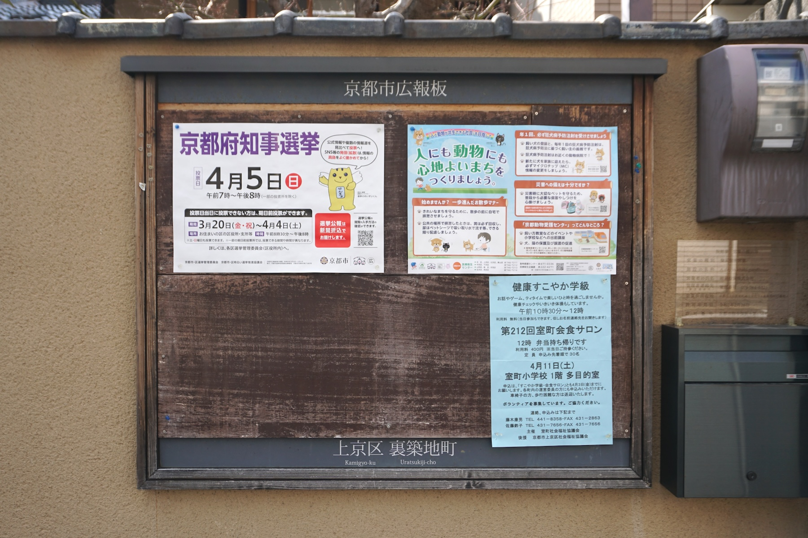
上京区裏築地町
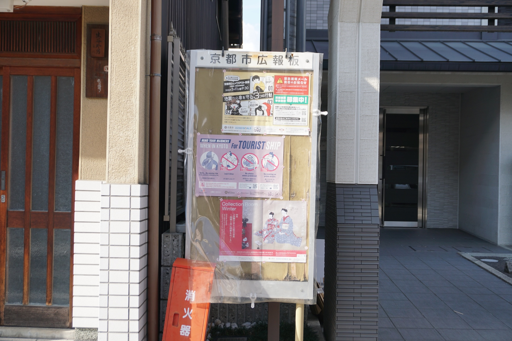
［上京区内構町］
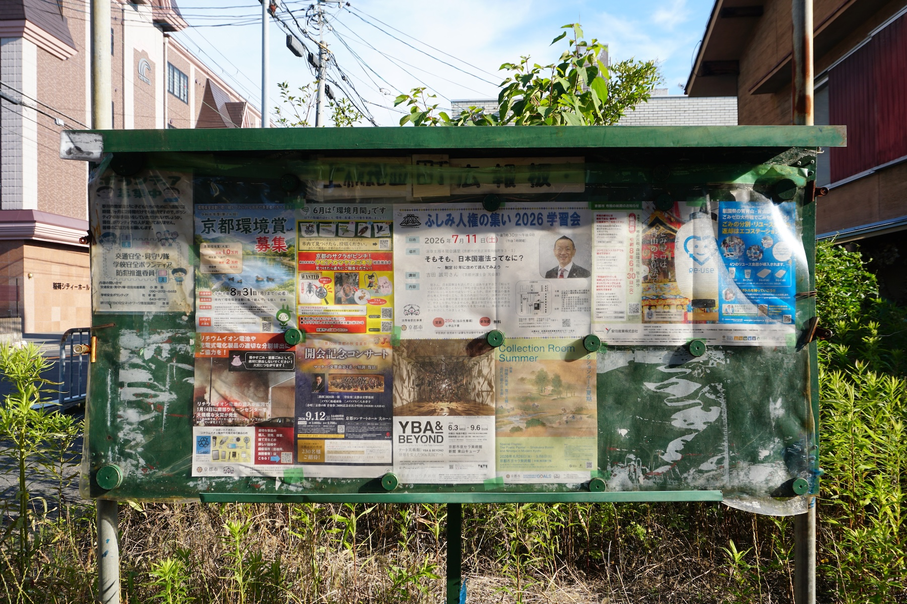
［伏見区深草上横縄町］
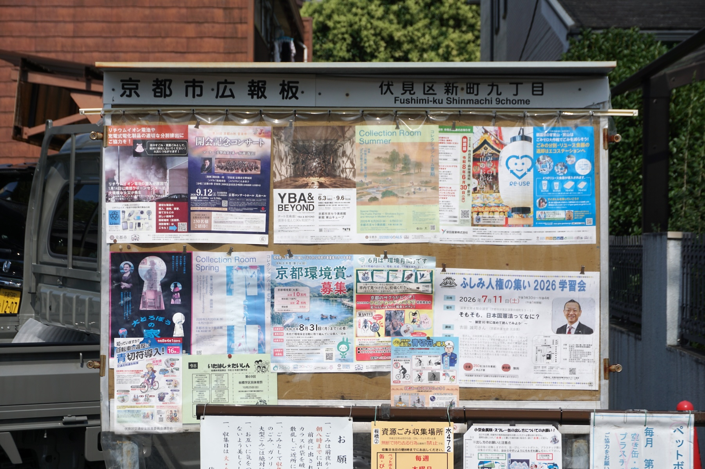
伏見区新町九丁目
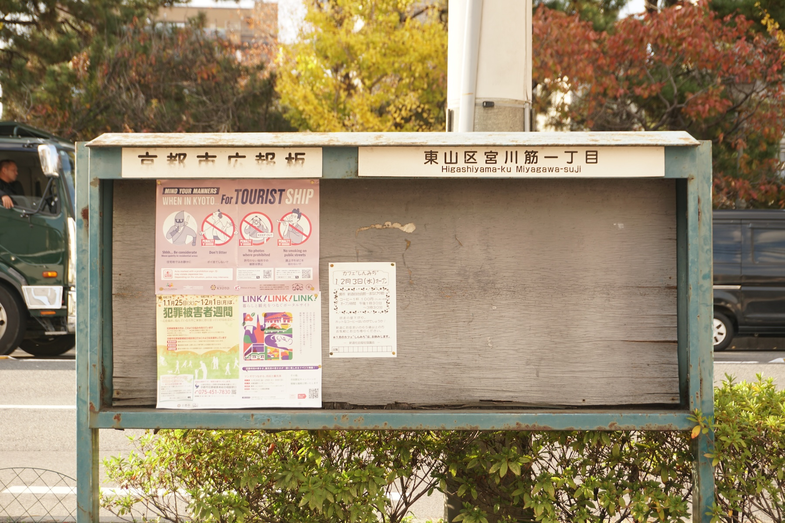
東山区宮川筋一丁目
もう一つ、特筆すべきものを挙げておきます。
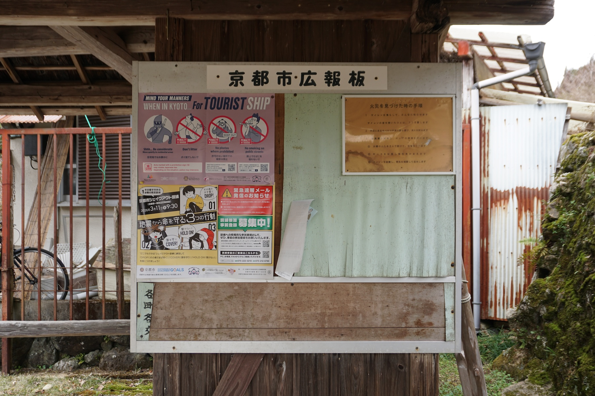
北区西賀茂氷室町にある広報板です。掲示物を貼る部分の下に何らかの空間があり、何やら文字が書いてあったらしい欠片が残っています。Googleストリートビューで2016年まで遡ってみると、「鬼〓〓株式会社」とあったようです。また、同じような広報板が右京区嵯峨清滝町で見つかります。こちらは文字が残っていませんが、2009年のGoogleストリートビューで「株式会社」の文字が確認できます。他の町名表示板が広告として設置されていた（参考）のと同様に、京都市広報板にも企業の広告が付いていた時代があったのでしょうか？
なお、同じように表面が上下に分かれている広報板は、下京区藪下町、中京区壬生森町（一部）、上京区三町目にもあります。ただ、Googleストリートビューで遡れる限りにおいて西賀茂氷室町や嵯峨清滝町で見られたような文字を見つけることはできませんでした。